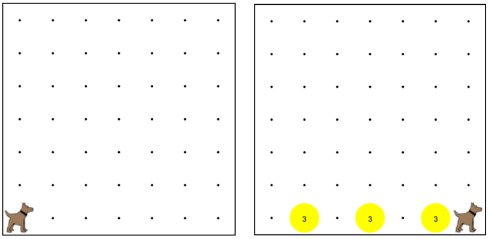

Karel is the waiter. He needs to deliver a stack of pancakes
to the guests on the 2nd, 4th, and 6th avenue.
Each stack of pancakes should have three pancakes.
卡雷爾是服務員。他在送一疊煎餅給客人2號，第4和第6大道。煎餅的每個堆棧應該有三個煎餅。
Create a function called makePancakes() to help karel solve this problem.
The world should end up exactly as shown here. You also should create a start()
function. No code should be outside a function.
創建一個名為做煎餅（）的函數來幫助卡雷爾解決這個問題。世界應該結束了完全相同，如下所示。
您還應該創建一個開始（）函數。沒有代碼應該是一個函數外部。

move(); 移動();
turnLeft(); 左轉();
putBall(); 放球();
takeBall(); 拿球();
function start(){ 功能啟動(){
// When you press the Run 當按下運行
// button, the start() 按鈕，開始（）
// function gets called 函數被調用
}